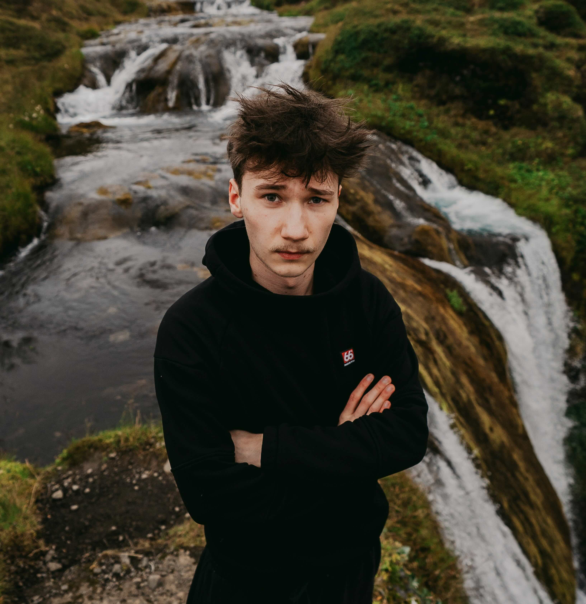

FOTKY Z PLESŮ A AKCÍ
Maturitní plesy, věnečky a společenské události. Kompletní reportáže v plném rozlišení najdete v mé klientské galerii.
Otevřít galerii ↗
PORTFOLIO



KDO JSEM
K fotografii jsem se dostal už v dětství, kdy jsem neustále půjčoval zrcadlovku svých rodičů a zkoušel zachytit svět kolem sebe.
Stejně jako mnoho kluků v té době jsem chtěl tvořit obsah na internet, což mě přivedlo i k práci s videem. Svoji vášeň pro focení jsem znovu objevil v roce 2020. Od té doby jsem nafotil desítky společenských akcí v Prostějově a jeho okolí.
SPOLUPRÁCE
Máte projekt nebo akci? Napište mi nebo zavolejte.
SÍTĚ